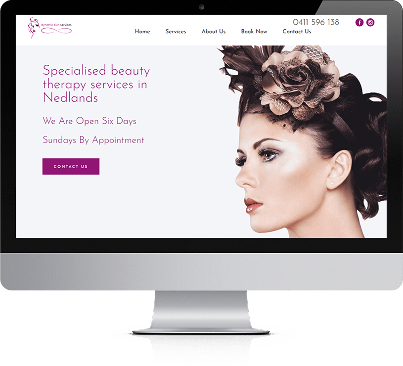
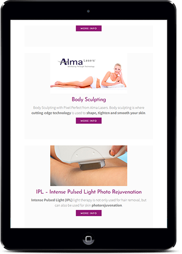
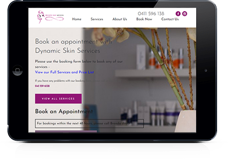
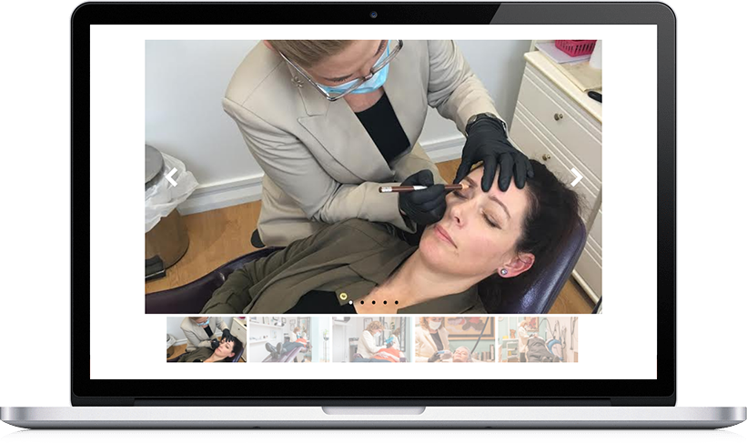
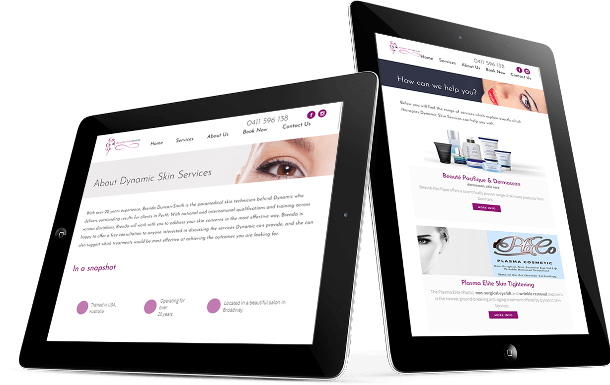
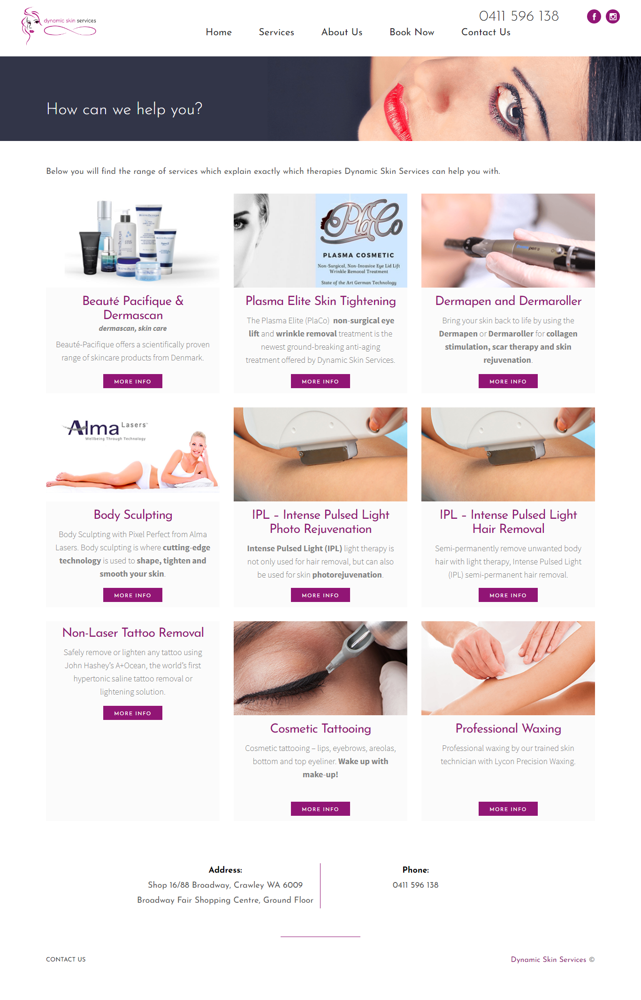
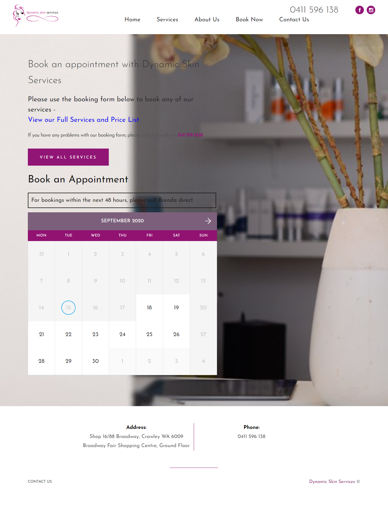
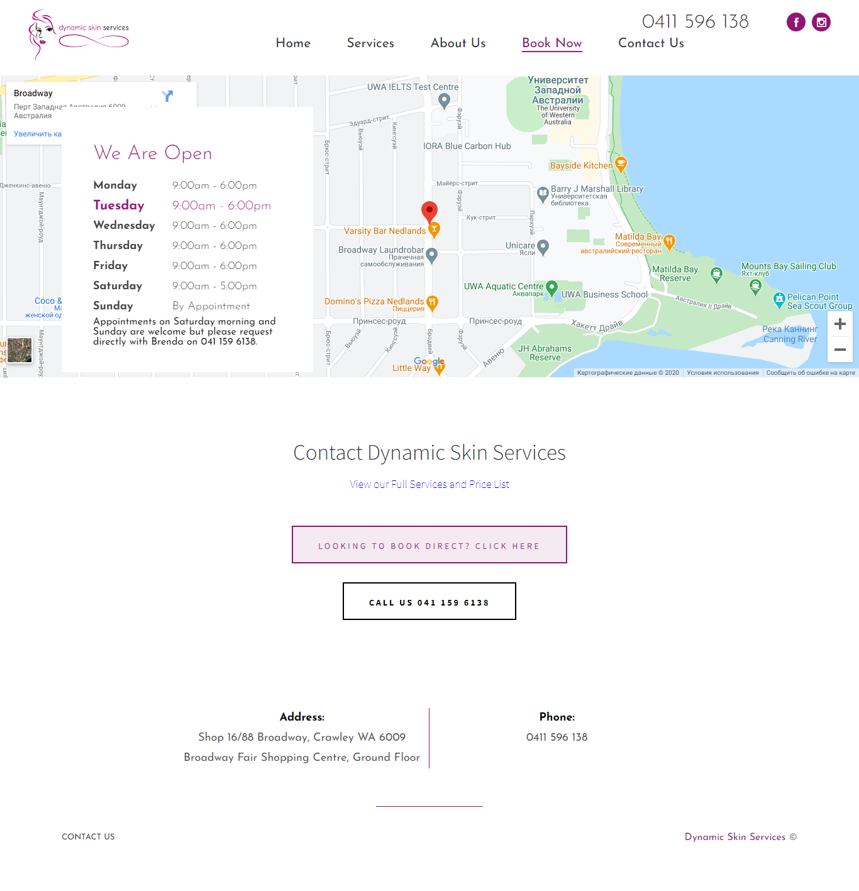

Dynamic Skin Services
In this case, the task was to fully develop the site
Domain Area: Beauty
Challenge: In this case, the task was to fully develop the site with a description of the customer's services, contact information, reviews, and the ability to make an appointment through the site. The customer also needed to be able to manage all site content through the Dashboard.




Solutions: We have developed a unique design and integrated it with WordPress. All content management was implemented using the Advanced Custom Fields Pro plugin. To implement the possibility of making an appointment, the Booked plugin for WordPress was used and modified.

Technologies: PHP, AJAX, WordPress, Booked, Advanced Custom Fields, Contact Form 7, JavaScript, HTML/CSS.



